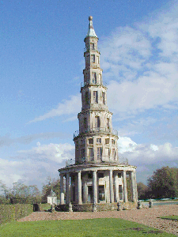

Construite de 1775 à 1778 cette pagode est le seul bâtiment encore debout alors qu'elle était un élément du décor d'un splendide château construit par Choiseul alors ministre de Louis XV.
Lorsque Choiseul est tombé en disgrâce et exilé à Chanteloup quelques fidèles amis n'oublièrent pas de venir visiter l'infortuné ex-ministre. En reconnaissance Choiseul fit construire cette Pagode conforme aux goûts de l'époque friande de "chinoiseries".
Le château a été détruit en 1823, les magnifiques jardins laissés à l'abandon , les terres vendues et il a fallu attendre 1910 pour que l'architecte René Edouard-André restaure cette pagode. Un magnifique panorama sur Amboise tout proche justifie l'ascension...